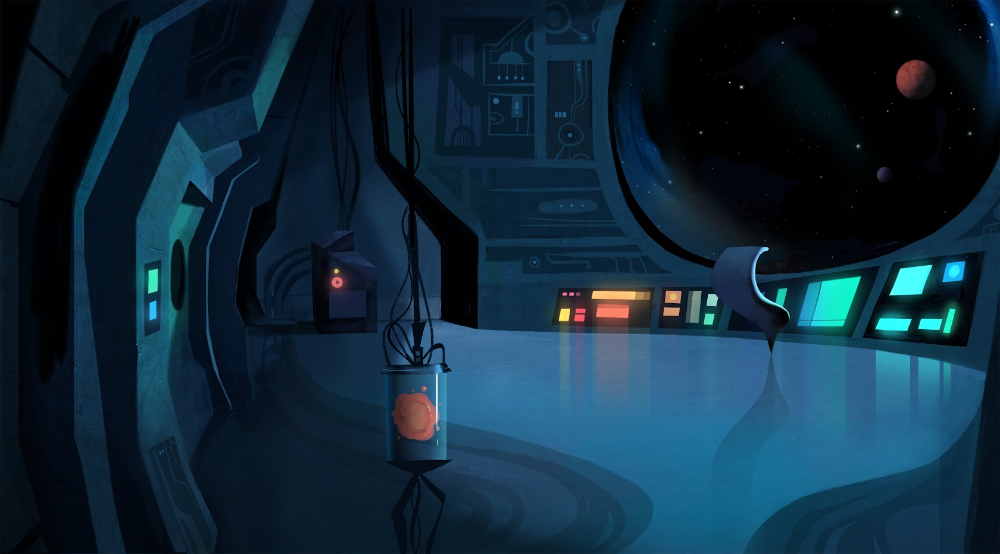

HTML, CSS, JavaScript
从入门到放弃
罗马不是一天建成的，这里会持续更新完善，敬请期待...
Rome was not built in a day, this zone will keep updating until finish. To be continued...

博客|Blog：MODELLING ELECTRICAL PROPERTIES OF THIN HIGH-K GATE STACKS
This project focus on researching the electrical properties of HfSiO (with 50% doping density), which is a high-k stack produced by MOCVD (the method of metal organic vapour chemical deposition). The final product is the different parameters that were calculated from the experimental CV curve, including k value, equivalent oxide thickness (EOT), mid gap voltage, mid gap capacitance, flat band voltage, flat band capacitance, fixed oxide charge.
查看 Take a Look库 Library
-
Cuprite
昨日进山去，今日抗花回。一都在想，回城赠予谁。
I spent a whole day in the mountain, return with a few branches of blossoms, while I still wondering who should I present to.石室诗士食狮史
石室诗士施氏，嗜狮，誓食十狮。施氏时时适市视狮...
Chinese traditional literature like: James while John had had had had had had had had had had had a better effect on the teacher.
查看 More» -
Diamond
7天时间，HTML从入门到精通，让我们来康康他的作品。
He spend only 7 days from the entry to proficiency in HTML, let's have a look of his amazing work.jiuzhe.html
三个月学习成果，绝对震撼！就就就就就斤斤计较军军军军军叽叽叽叽积军叽叽叽叽积极急急急叽叽叽叽叽叽军军就这？
Incredible Achievement for ONLY THREE MOUNTHS. So What?
查看 More» -
Emerald
这个人很懒，什么都没有写。
opps, this guy is too lazy who writes nothing here xD.HTML5: An immense improvement of HTML which is a huge step towards the future
HTML5 has contributed to building a new generation of websites with a standardized specification, which provides support to the website to work correctly without additional plugins.
查看 More»